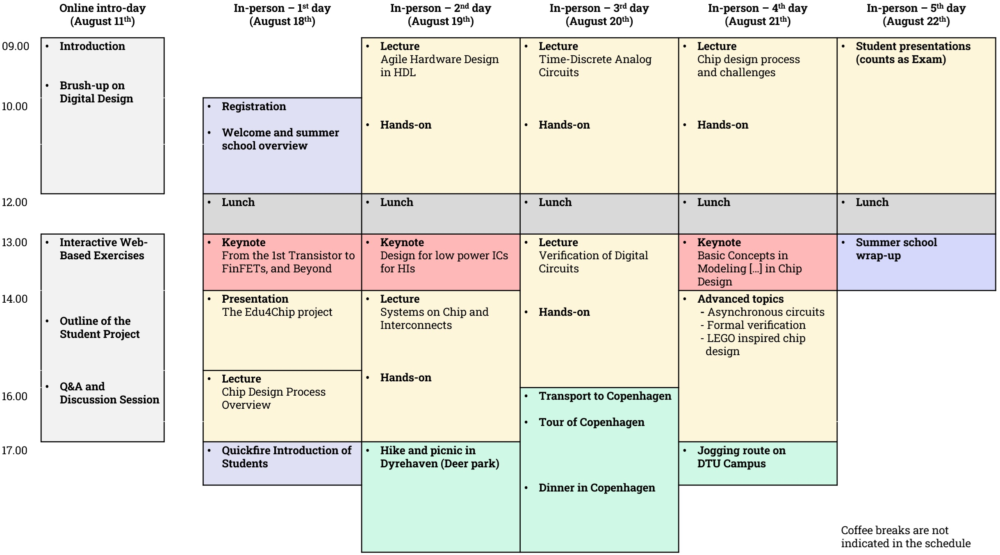
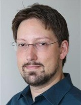

Overview

The summer school is organized by the Technical University of Denmark (DTU) in collaboration with Edu4Chip partner institutions and will take place in Denmark at the Technical University of Denmark campus in Kongens Lyngby (near Copenhagen).
The summer school is structured into two main parts:
- Online intro-day (August 11th) – Covering fundamental concepts in chip and digital design, with interactive exercises and project introductions.
- In-person program (August 18th to 22nd) – Held at DTU in Denmark, featuring in-depth lectures, hands-on activities, keynotes, and social events.
Target audience and scope
The summer school is designed for Bachelor students and Master students with a background in electrical engineering, computer science and engineering, or physics, the summer school emphasizes practical learning activities. PhD students are also welcome. Participants will acquire foundational knowledge of chip design workflows, develop skills in tools and methodologies, and explore cutting-edge developments in the field.
ECTS credit transfer and financial support
The Edu4Chip Summer School is organized within the framework of the Erasmus Blended Intensive Program (BIP), which allows for credit transfer among participating institutions. Upon successful completion within the BIP, students can be awarded 3 ECTS credits. For students enrolled at DTU, the summer school can be integrated into a more extensive 3-week special course, allowing them to earn 5 ECTS credits.
For details on financial support options, especially for students from Erasmus partner institutions and Edu4Chip partners, please refer to the Financial Support section.
Student pre-registration
Participation in the Edu4Chip Summer School is free of charge for students. However, due to limited capacity, we require all interested student participants to pre-register. This process helps us ensure a diverse and balanced group of students from different institutions and backgrounds.
To pre-register, please complete the Pre-registration by March 31th, 2025. After reviewing all applications, selected participants will receive a confirmation of admission via email and you will be prompted to the registration portal.
Important Information:
- Pre-Registration deadline: March 31th, 2025
- Student participation fee: Free of charge
- What is included: All lectures, keynotes, program materials, snacks, and lunches.
- Not included: Travel, accommodation, private expenses, and social activities (optional), which must be covered by participants.
For those in need of financial support for the expenses that are not included, please refer to the Financial support section for information on available funding options. Please note that the deadline for applying for financial support depends on the institution you are from and might be earlier than the pre-registration deadline (see the Financial support section).
Student financial support
To support student participation in the Edu4Chip Summer School from countries outside Denmark, two financial support options are availble to help cover travel and accommodation costs.
Support via Erasmus+ Blended Intensive Program (BIP)
The support via Erasmus+ Blended Intensive Program (BIP) is available to students from any DTU Erasmus+ partner institutions. This support helps cover travel, accommodation, and other expenses for eligible participants.
Eligibility: Students enrolled at DTU Erasmus+ partner institutions. In the context of Edu4Chip, these are KTH Royal Institute of Technology, Technical University of Munich (TUM), and Tampere University (Finland). However, students from other institutions that are Erasmus+ partners of DTU might be eligible for this support. Please contact your institution's international/Erasmus office for application details and procedures.
Support via Edu4Chip
The Edu4Chip project can provides financial support for students from Edu4Chip partner institutions to cover travel, accommodation, and other expenses related to the participation in the summer school.
Eligibility: Students from all Edu4Chip partner universities .
More information and applications
If you are from one of the Edu4Chip partners, see the contact person in your institution below. If you are from another university, you might still be eligible for support via Erasmus+ Blended Intensive Program (BIP), if your institution is an Erasmus+ partner of DTU. Please contact your institution's international/Erasmus office for application details and procedures.
For students from the Technical University of Munich (TUM):

|
Contact person: PD Dr.-Ing. habil. Michael Pehl Mail: m.pehl@tum.de Phone: +49 (89) 289 - 28252 Homepage: Link to homepage |
For students from KTH Royal Institute of Technology:

|
Contact person: Prof. Ahmed Hemani Mail: hemani@kth.se Phone: +46 8 790 44 69 Homepage: Link to homepage |
For students from Tampere University (TAU):

|
Contact person: Prof. Timo Hämäläinen Mail: timo.hamalainen@tuni.fi Phone: +35 8408490777 Homepage: Link to homepage |
For students from Institut Mines-Télécom (IMT):
| Contact person: Prof. Jean-Max Dutertre Mail: dutertre@emse.fr Phone: +33 (0)4 42 61 67 36 Homepage: Link to homepage |
For students from the Technical University of Denmark (DTU):

|
Contact person: Assoc. Prof. Luca Pezzarossa Mail: lpez@dtu.dk Homepage: Link to homepage |
We encourage all interested students to apply early to secure funding support.
Program and content
Over six days, including the online introductory day, participants will engage in lectures, hands-on exercises, and keynotes delivered by leading academics and industry experts. The program highlights topics such as agile hardware design, analog/mixed-signal circuits, verification techniques, and asynchronous circuits.
The Edu4Chip Summer School is structured into two main parts: an Online intro-day and an In-person program in Copenhagen. Find below the schedule, and a detailed description of the content of the online intro-day, in-person lectures, keynotes, and other activities, as well as the learning objectives.
Schedule (tentative)
Online intro-day (August 11th)
The online into-day provides an overview of the Edu4Chip Summer School, covering fundamental concepts in chip and digital design. Participants will engage in interactive exercises and receive guidance on the student project to prepare for the in-person sessions. Find below a summary of the intro-day activities.
-
Introduction to the summer school
An overview of the summer school, its objectives, and an introduction to the program, participants, and instructors. -
Brush-up on digital design
A refresher session focusing on essential digital design concepts to ensure all participants are aligned with the foundational knowledge. -
Interactive web-based exercises
Hands-on activities where participants will design and simulate an integrated circuit using open-source tools. -
Outline of the student project
Introduction to the student project, detailing objectives and expected outcomes. Projects will be carried out during the summer school. -
Q&A and discussion session
An interactive session for participants to engage with instructors, ask questions, and discuss key topics covered throughout the day and planned for the physical part of the summer school.
In-person program (August 18th to 22nd)
The in-person program offers a blend of lectures, hands-on activities, and keynotes. In addition to the lectures and keynotes, we also planned some activities to connect, relax, and explore both the academic environment and the vibe of Copenhagen. Find the details below.
Lectures
|
Chip design process overview
by Prof. Timo Hämäläinen, Tampere University
This lecture provides an introductory overview of the chip design process, covering key steps from initial specification and architecture design to RTL development, verification, synthesis, physical design, fabrication, and final testing of the chip.
|
|
Agile hardware design in HDL
by Prof. Martin Schoeberl, Technical University of Denmark
The lecture on Agile hardware design with Chisel (Constructing Hardware in a Scala Embedded Language) focuses on using the Chisel hardware construction language as part of the agile hardware design process. Chisel is a modern hardware description language that enables designers to create digital circuits with concise, high-level code that is easier to write and maintain than traditional HDLs.
Agile hardware design applies modern software development methods to the design of hardware. With functional programming in Scala, you will learn how to write so-called hardware generators. This lecture includes hands-on describing a generator In Chisel. |

Systems-on-chip and interconnects
by Assoc. Prof. Luca Pezzarossa, Technical University of Denmark
This lecture provides an introduction to system-on-chip (SoC) architectures and interconnect technologies, essential for modern chip design. SoCs integrate multiple components such as processors, memories, accelerators, and peripherals into a single chip, enabling high-performance and energy-efficient computing. The lecture examines the challenges of designing scalable and flexible SoCs, focusing on SoC design principles and how different interconnect strategies (traditional bus-based communication, AXI4Lite, and advanced Networks-on-Chip (NoC) solutions) impact the design performance, power consumption, and modularity.
The lecture includes a hands-on laboratory session, where students explore the use of NoC based interconnect architectures in a multicore setting. |
|
Time-discrete analog circuits
by Dipl.-Ing. (Univ.) Markus Dietl, Technical University of Munich
This lecture explores the principles of time-discrete analog circuits, focusing on their design, analysis, and applications in modern electronic systems where analog signals are processed at discrete time intervals.
|

Chip design process and challenges
by Assist. Prof. Ole Richter, Technical University of Denmark
This lecture offers an in-depth overview of the chip design process, highlighting common challenges such as design complexity, power, I/O, clock distribution, etc.
|
|
Verification of digital circuits
by Syosil
This lecture, delivered by experts from Syosil, a Danish company specializing in verification solutions, covers the verification of digital circuits, focusing on methodologies and tools used to ensure design correctness (simulation, formal verification, etc.).
|
|
Advanced topics: Asynchronous Circuits
by Emeritus Prof. Jens Sparsø, Technical University of Denmark
This lecture introduces asynchronous circuits, which are digital circuits that operate without a global clock. This class of circuits can lead to advantages in terms of power efficiency, performance, and robustness compared to traditional synchronous designs.
|
|

Advanced topics: Formal verification
by Emeritus Assoc. Prof. Oliver Keszöcze, Technical University of Denmark
This lecture introduces formal verification, a mathematical approach to ensuring the correctness of hardware and software systems. It covers key techniques used to detect and prevent design flaws, offering rigorous guarantees for system reliability.
|

Advanced topics: LEGO-inspired chip design
by Prof. Ahmed Hemani, KTH Royal Institute of Technology
Computer architects and the design automation community pursue efficiency improvements across multiple dimensions: computation, silicon, design, and manufacturing. However, state-of-the-art standard cell-based tooling has become unscalable, even as the demand for higher performance and computational efficiency continues to rise. To address these challenges, a Lego-inspired design framework called SiLago has been developed, demonstrating promising results—achieving 10 to 100 times better energy efficiency compared to COTS solutions. SiLago enables end-to-end automation while delivering ASIC-comparable efficiency. The generated designs are correct by construction, as well as timing and DRC-clean. Furthermore, SiLago is being explored beyond CMOS technologies, including applications in memristor-based computation and wave-based computing.
|
Keynotes
|
From the 1st transistor, to FinFETs, and beyond
by Assoc. Prof. Flemming Stassen, Technical University of Denmark
This keynote explores the evolution of transistor technology, tracing its journey from the first prototypes to modern FinFETs, and providing insights into emerging trends and future advancements in the field.
|

Design for low-power ICs for HIs
by Evangelia Kasapaki and Vijay Kumar Bhat, from the company Demant
This keynote is presented by experts from Demant, a leading company in hearing aid technology. Advanced hearing aids use integrated circuits (ICs) carachterized by critical requirements of PPA: Power (power efficiency), Performance (throughput, latency, signal quality), and area (IC area, RAM, ROM, NVRAM). On the other hand, the HIs need to handle diverse applications like audiology and wireless protocols. Thus, the HI ICs rely on high level of specialization in IC technology, digital-analog circuits, micro-controllers, DSP, and AI processors. Overall, the HIs consist of multiple specialized ICs and within the ICs can be multiple processor cores, all these are tied together with performant yet efficient communication busses and NOC.
The keynote presents and discusses hardware strategies for supporting HI applications like audio processing, AI, and wireless communication on a constrained power budget. |
|
"Basic concepts in modeling" - A discussion of George Box's famous statement 'All models are wrong, some are useful' with a strong focus on models in chip design
by Prof. Dr.-Ing. Wolfgang Ecker, Infineon - Technical University of Munich
This keynote examines modeling principles in chip design, reflecting on the balance between model simplicity and utility. It discusses George Box’s famous statement, ‘All models are wrong, some are useful,’ with a strong focus on its relevance to chip design methodologies.
|
Other activities
-
Quickfire introduction of students
A fast-paced session where participants briefly introduce themselves to get to know each other. -
Student presentations (counts as the exam)
An interactive poster/presentation session where students present their project outcomes, followed by an evaluation to conclude the summer school. -
Visit and tour of Copenhagen
A tour to provide participants with an opportunity to explore the city’s vibe and architecture. -
Hike and picnic in Dyrehaven (Deer Park)
Outdoor walk and picnic in Dyrehaven (the Deer Park), known for the free-roaming deers. -
Jogging route on DTU campus
A casual group jogging session around the DTU campus. -
Social dinner in Copenhagen
A social dinner in Copenhagen for all the participants.
Learning objectives
A student who has successfully completed the summer school will be able to:
- Explain the fundamentals of semiconductor devices.
- Explain all steps in the chip design process.
- Apply principles of agile hardware design to describe and implement digital systems.
- Explain and analyze analog and mixed-signal design challenges.
- Explain and use simple verification tools to ensure proper hardware functionality.
- Describe the importance of sustainability for hardware designs.
- Compare asynchronous circuits with synchronous designs to evaluate their advantages and limitations.
- Illustrate the role and functionality of on-chip interconnects in modern chip architectures.
Other information
DTU's 3-week special course
For DTU students only, we plan to integrate the summer school into a DTU 3-week special course worth 5 ECTS, which includes an additional project week to further develop and apply the concepts learned. The course reposnible will be Luca Pezzarossa and the course will be structured as follows.
Week 1: Preparation & project selection (August 11-15)
- Participation in the Summer School Intro-Day (August 11th).
- Background review on key topics covered in the summer school.
- Introduction to project options and selection of practical projects.
Week 2: Edu4Chip Summer School (August 18-22)
- Intensive lectures, presentations, and hands-on activities.
- Keynotes and industry insights.
- Networking and social events.
Week 3: Practical project execution (August 25-29)
- Work on the selected projects, with guidance from the teacher.
- Application of design, verification, and testing methodologies from the summer school.
- Exploration of one or more key topics in greater depth.
- Final report and/or presentation to summarize findings and outcomes.
Learning Objectives
The learning objectives of the special course are aligned with those of the summer school (see above).
Questions and contacts
If you have any questions about the Edu4Chip Summer School, feel free to reach out to us. Whether you need more information about the program, registration process, participation grants, or logistics, we are here to help!
|
|
Contact person: Assoc. Prof. Luca Pezzarossa Mail: lpez@dtu.dk Homepage: Link to homepage |